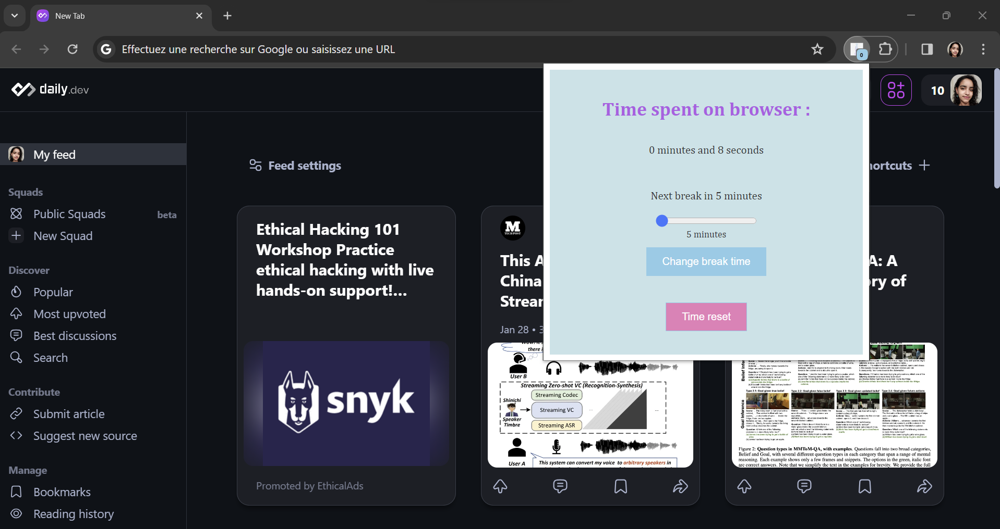
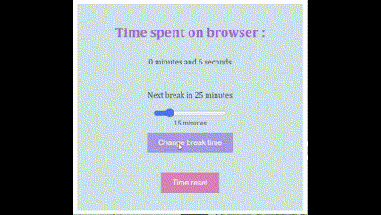
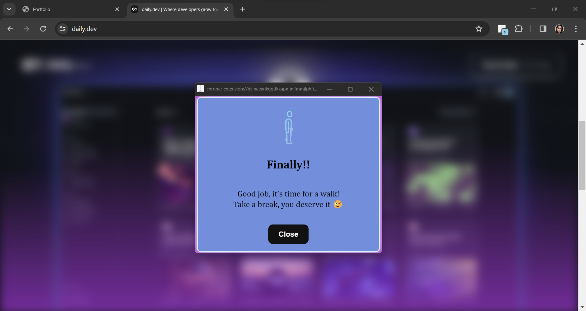

À propos
Après un temps de navigation configurable, GoRest floute le contenu de la page et affiche une fenêtre de rappel proposant de faire une pause.
Projet collectif · Extension navigateur
Une extension Chrome qui invite à faire une pause après un temps de navigation choisi.
En images




Après un temps de navigation configurable, GoRest floute le contenu de la page et affiche une fenêtre de rappel proposant de faire une pause.